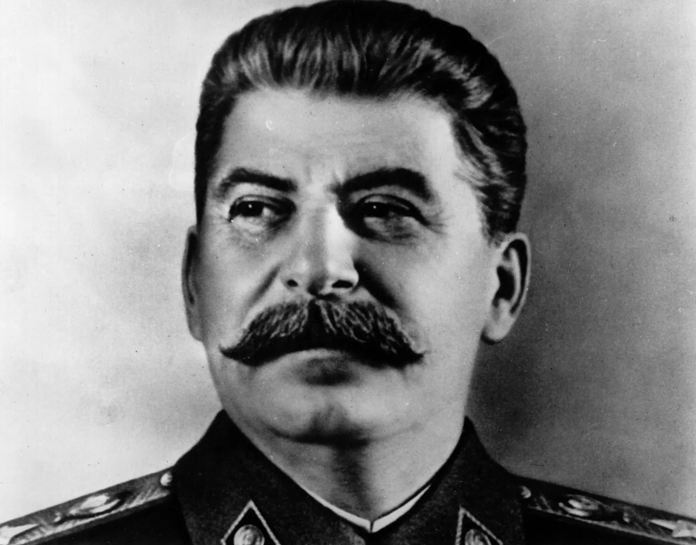
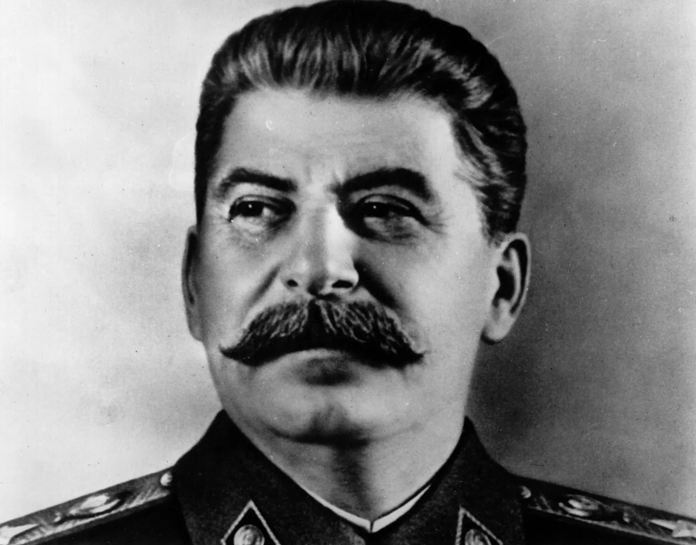

Conclusion
The counter-offencive attack from the Soviet army, code named Operation Uranus, proved deadly for the German army. This meant that the Germans were completely encircled and had all supply lines into the city cut, which in turn meant that the german soldier did not have adequate weapons, ammunition, clothing for the cold weather conditions and simply not enough food to continue the fight. Moral was non-existant amongst the German ranks at this poont and all were ready to surrender on the front. German high command had other ideas however and in great dissolution wanted to continue the fight, essentially leaving their 6th army to die. Eventually, German commander, Friedrich Paulus, decided that enough was enough and againt orders from Hitler himself, he met with the Soviet Generals to agree terms on the Germans surrunder. The Soviets took in 91,000 german PoW's which only 6000 of them were ever to return home after the war had ended. The defeat of the German army marked the end of their advance into the Soviet Union and set the stage for the eventual defeat of the Axis powers in Europe. The defeat was the most embarrassing and humiliating one yet for Hitler and of course the most glorius one for Stalin.
 
